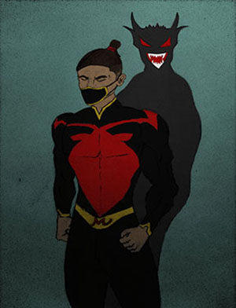

My Name is Wilson Arocho. I'm 35 years old Married and have 4 children. Life has always had many ups and downs, more downs than ups unfortunately but whenever there
are downs, I turn to my hobbies to help clear my mind. I love to draw and though I might not be the greatest artist out there, It is definitely one way that helps me
to relieve some stress. Most of what I draw are original characters or scenery as I feel it best reflects how I am feeling. Video editing is another hobby that I enjoy
as it allows me to take some footage and turn it into something more. Even when the footage is not the greatest I can use editing to create something that can entertain people or at least that's
the goal. Most of the footage that I edit comes from the video games that I play which brings us to my next hobby. Gaming is my main hobby when it comes to relieving
stress because when I play a game it's like I'm entering into an entire new world where I don't have to be who I am and I can forget about the struggles of life even
though I still have to deal with everything lol. It is also a way for me to stay connected with a lot of my friends and family.
The next 2 hobbies are fairly new and I still have much to learn about but with Photography I feel as if I'm able to capture the beauty of life in an instant whether
it is images of nature, man made objects, or people like my family. There is nothing like capturing a moment that is gone so fast and being able to look back and see
that moment frozen in time. I wish I had gotten in Photography sooner in life. Photoshop is something that I still have a lot to learn about but it is very fun being
able to combine photos to create something new or combine the same photo with different lighting to create a different effect. The world is a beautiful place and Photography
allows us to capture that beauty in many ways.

Mage the Monster
Mage the Monster is my alter ego. He is my original character that represents another side of who i am.
It is also the Name I use for my gamer tag. Having an alter ego allows me to express myself and to trully be open and have fun with some of my
hobbies.